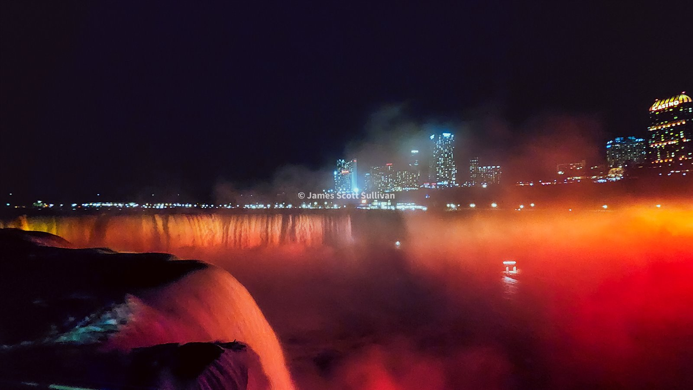
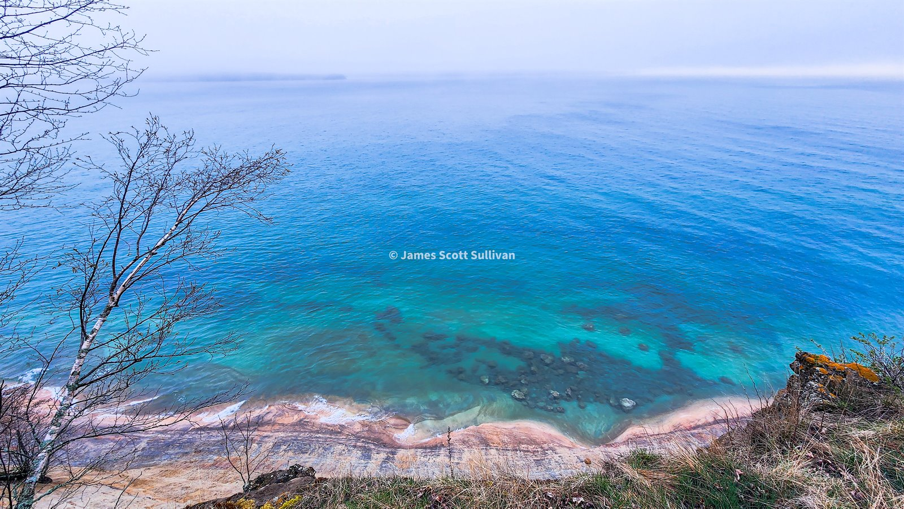

52 days, about 15,000 miles, one set of tires, no more than ten total showers, and countless memories. That was the final stat line. At the start, though, it was just an idea that had been rattling around in my head for years.
Maybe it came from old American movies where somebody points the car west and just goes. Maybe it came from that little Oregon Trail game on our phones back in the 2000s. Maybe it was family road-trip energy lodged somewhere deep in my brain. Who knows. Probably all of it. What I do know is that I was working in biotech as a research associate, the company was winding down operations after pulling out of Phase 3 clinical trials, and suddenly I got laid off. A couple days into unemployment, I still had no clue what I wanted to do next. I just knew I was not ready to go back to work.
About a week later I was at the hairdresser talking about my nephew, who was due to arrive in about a month, and I brought up the road-trip idea. She basically hit me with: ask your sister if it is okay, then go do it. So I did. It was okay. Two days later I left.
The original plan was loose to the point of comedy. Massachusetts to Niagara Falls. Then straight across the country to Seattle. From there maybe Los Angeles, maybe Joshua Tree, then back east. I had five national parks I absolutely wanted to hit: Badlands, Glacier, Olympic, Joshua Tree, and the Grand Canyon. In my head it was about 10,000 miles and 30 days. Very clean. Very organized. Completely wrong.
One of the best things I did early was start posting what I was doing and ask people for recommendations. A friend I had met at a backcountry festival reached out. He had been to every state in the country twice. Gold!! He basically took me under his wing from a distance, feeding me secret spots, local beta, and random connections to cool people. That changed the whole trip. I will forever be grateful for that.
So off I went. I started the whole thing by hiking Mount Greylock, the high point in Massachusetts. I had been meaning to ski it for years, and hiking it felt like the right way to kick the door open. It was pretty, but still stuck in that awkward mid-spring stage where nothing is fully green yet and the landscape feels like it is still waking up. Boy was I in for a surprise later in the trip. Looking back, I timed the whole thing pretty dang well.
That same day I made it to Niagara Falls. It was my second time there, but the first trip was when I was much younger and camping with my family, so this one felt different. I biked around for a bit, took in the sheer absurd force of the place, then drove my car to a Love's truck stop and slept there. I would end up using truck stops pretty regularly, so I am glad I got comfortable with it on night one. Not glamorous, but very functional. A good theme for the trip, honestly.

By the next morning, Niagara already felt like the edge of the world I knew. I had been there before. I had done versions of this side of the country before. Once I left, it finally felt like I was in untread territory and the whole thing took on that bright, electric feeling where even a gas stop seems mildly important.
I drove west for hours, mostly just trying to put distance between me and the life I had just stepped out of. It was still very much that East Coast gray spring, but the land already felt different. Fertile. Super green grass. Wet roads. Low skies. The kind of landscape that does not look dramatic in postcards but feels great when you are moving through it with nowhere else to be.
By the time I reached Sleeping Bear Dunes, I could feel the trip starting to settle into my body a little. Long driving, random stops for gas, beer, and food, then suddenly this strange, open terrain that felt nothing like home. I found a campsite, set up the awning, and crashed just as the rain started. Great timing for once. It was a simple night, but it mattered. I slept well, and that ended up being one of the sneaky blessings of the whole trip. For all the miles, weird parking lots, truck stops, campsites, and improvised setups, I actually slept pretty damn well most of the time.

That was really the opening lesson of the trip: I did not need a perfect plan. I needed momentum, a little nerve, and a willingness to keep going even when the sleeping situation was questionable and the route made no real sense on paper. Once that clicked, there was no stopping me.